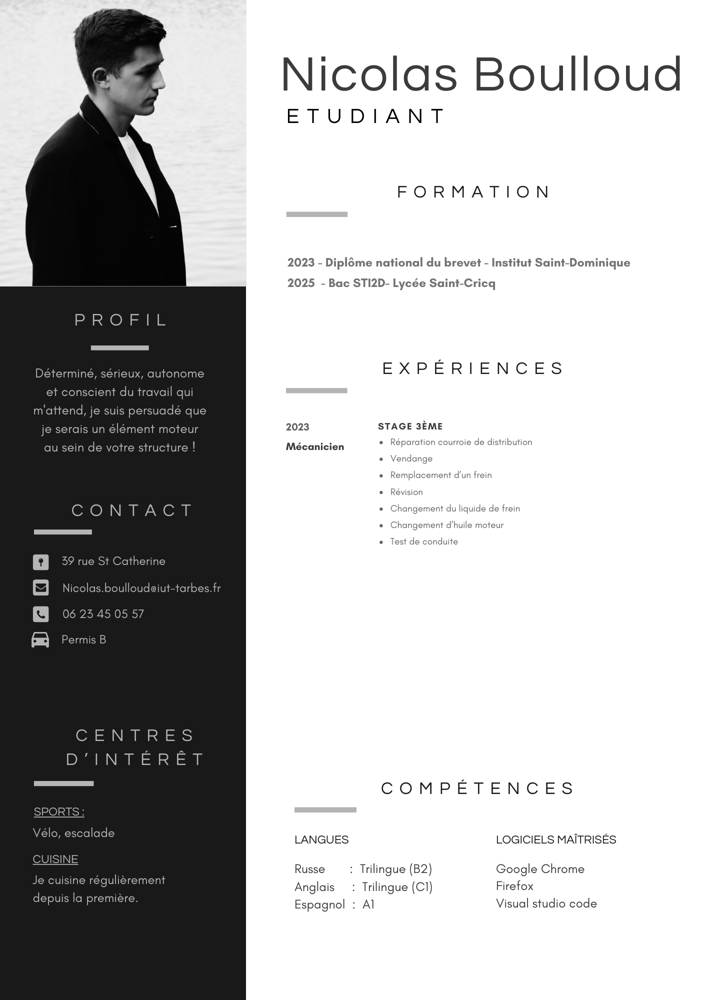

À PROPOS
Quelle est la raison du choix de la filiaire MMI ?
Parmis les 4 choix que j'avais inscrit sur parcoursup, seul 1 a été accepté le 1er, alors sans plus attendre j'ai décidé de le valider. L'IUT de Tarbes est la seul option qui me permettait de vivre seul puisque j'habitait à Pau. Ainsi, j'ai la possiblité de consolider mes connaissances culinaires !
La filiaire correspond t-elle a mes attentes ?
Pas vraiment, je ne savais pas qu'il fallait attendre 3 semestres pour pouvoir se spécialiser. Je trouve qu'une année est amplement suffisant pour trouver sa filiaire.
Quelle est ma vision de la filiaire MMI :
J'ai fais les portes ouvertes et j'ai eu la chance de pouvoir poser des questions a Mr. Brulin qui m'a très bien expliquer a quoi je devais m'attendre
| Parcours scolaire |
|---|
| Maternelle - Joyeux Béarne (Pau) |
| CP / CE1 - Marancy (Pau) |
| CE2 / CM1 - Saint-Dominique (Pau) |
| CM2 / 6ème / 5ème - Ecole ELF Michelin (Port-Harcourt) |
| 4ème - Lycée Stendhal (Milan) (Port-Harcourt) |
| 3ème / Seconde - Institut Saint-Dominique (Pau) |
| Première / Terminale - Lycée Saint (Pau) |
| Bac +1 - IUT de Tarbes |
Voci mon cv :
{kind=link}